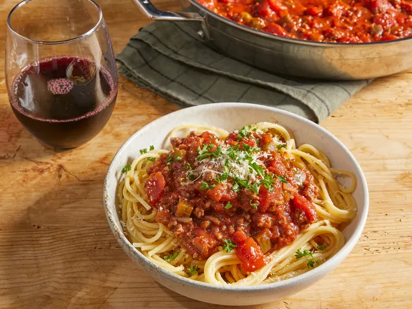

Spaghetti

Description
One of everyone's all-time favorites, this dish is served with pasta with a tomato or marinara sauce atop of it. Toppings can vary heavily by preference, but I usually like to put meatballs, bell peppers, and mushrooms on my type of spaghetti. A rather frugal meal that got me through the summer.
Ingredients
- 1 box spaghetti noodles
- 1/2 chopped onion
- 1 tablespoon garlic, peeled
- 1 bell pepper, sliced
-
- 1 jar spaghetti sauce
- Alternatively, you can make your own sauce but I just use the jars of sauce as it's easier to make.
- 8 mushrooms, sliced
- 10 meatballs, or 10 slices of sausage
- Chopped parsley
- Salt and pepper
- Vegetable oil
Steps
- Pasta
-
- On large pot, boil water. Once water is boiling, add a pinch of salt.
- Place spaghetti noodles in pot.
- Stir occassionally for about 10-12 minutes or as instructed on the box of the spaghetti noodles.
- Drain noodles in a strainer and rinse thoroughly with cold water. Set aside.
- Sauce
-
- Place garlic, onions, and meat onto a saucepan. Cook on medium heat until onions and garlic are golden brown.
- Add sauce. Add salt, pepper, and parsley. Stir contents.
- When sauce begins to bubble for a few minutes, spaghetti is ready to be served.
- Finish
-
- If desired, heat pasta in microwave for up to 30 seconds.
- Combine sauce with pasta in a separate bowl.
- Serve. Leftovers can be stored in a container for up to 3 days.
Back to home